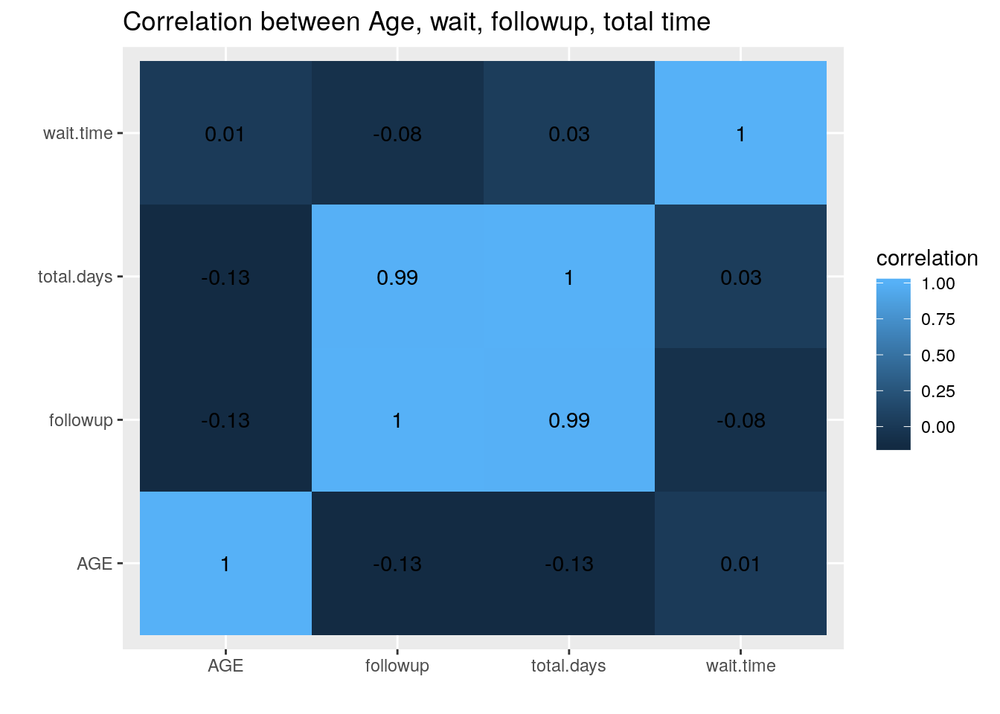
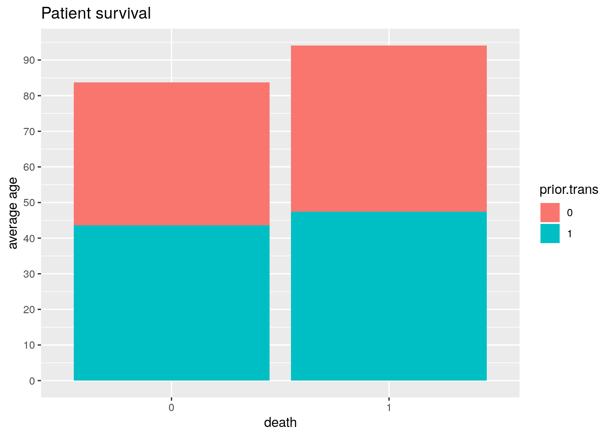
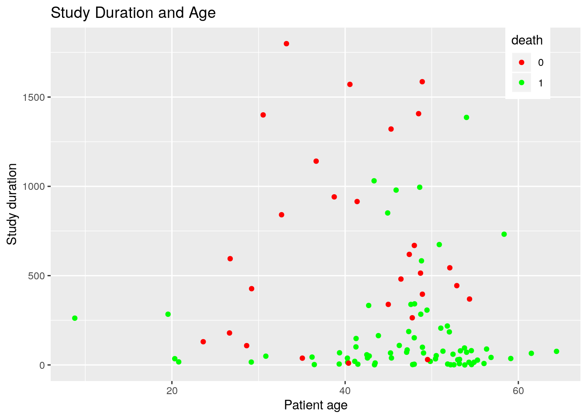
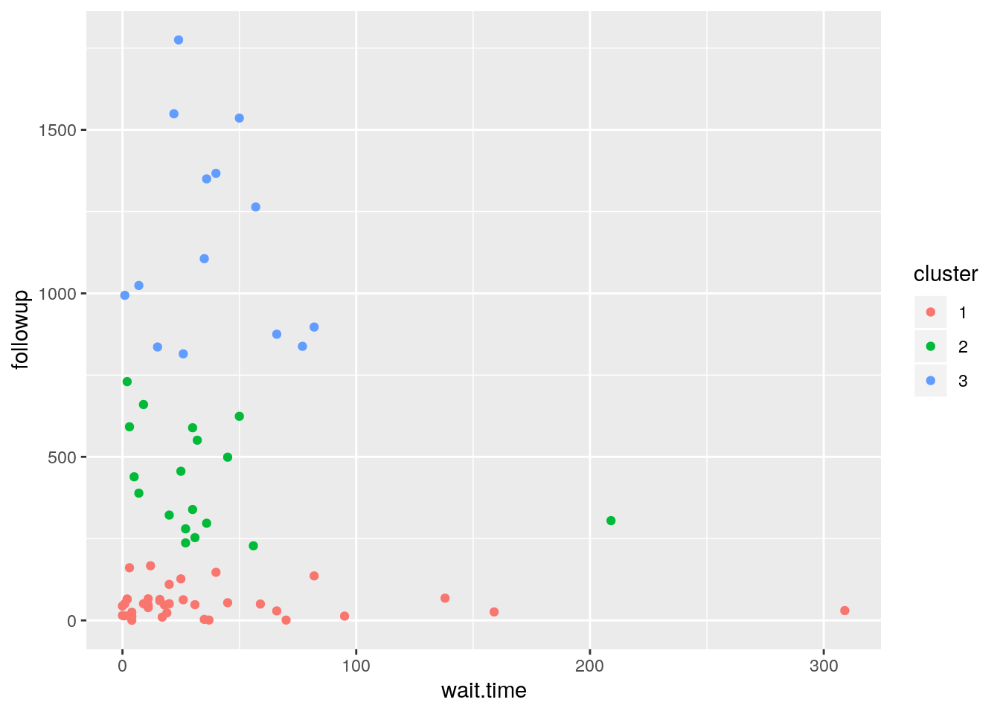
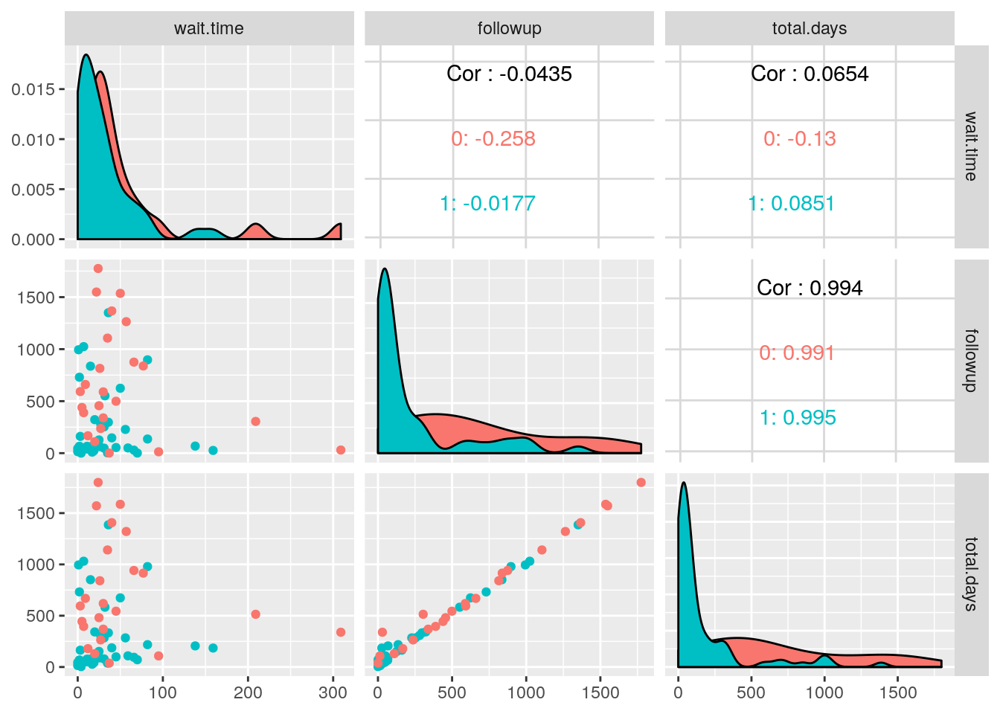

library(tidyverse)
Heart1<-survival::jasa
Heart2<-survival::jasa1
glimpse(Heart1)## Observations: 103
## Variables: 14
## $ birth.dt <date> 1937-01-10, 1916-03-02, 1913-09-19, 1927-12-23, 1947-07-2…
## $ accept.dt <date> 1967-11-15, 1968-01-02, 1968-01-06, 1968-03-28, 1968-05-1…
## $ tx.date <date> NA, NA, 1968-01-06, 1968-05-02, NA, NA, 1968-08-31, NA, N…
## $ fu.date <date> 1968-01-03, 1968-01-07, 1968-01-21, 1968-05-05, 1968-05-2…
## $ fustat <dbl> 1, 1, 1, 1, 1, 1, 1, 1, 1, 1, 1, 1, 1, 1, 1, 1, 1, 1, 1, 1…
## $ surgery <dbl> 0, 0, 0, 0, 0, 0, 0, 0, 0, 0, 0, 0, 0, 0, 1, 0, 0, 0, 0, 0…
## $ age <dbl> 30.84463, 51.83573, 54.29706, 40.26283, 20.78576, 54.59548…
## $ futime <dbl> 49, 5, 15, 38, 17, 2, 674, 39, 84, 57, 152, 7, 80, 1386, 0…
## $ wait.time <dbl> NA, NA, 0, 35, NA, NA, 50, NA, NA, 11, 25, NA, 16, 36, NA,…
## $ transplant <dbl> 0, 0, 1, 1, 0, 0, 1, 0, 0, 1, 1, 0, 1, 1, 0, 1, 0, 1, 0, 1…
## $ mismatch <dbl> NA, NA, 2, 3, NA, NA, 4, NA, NA, 2, 1, NA, 3, 1, NA, 2, NA…
## $ hla.a2 <dbl> NA, NA, 0, 0, NA, NA, 0, NA, NA, 0, 0, NA, 0, 0, NA, 0, NA…
## $ mscore <dbl> NA, NA, 1.11, 1.66, NA, NA, 1.32, NA, NA, 0.61, 0.36, NA, …
## $ reject <dbl> NA, NA, 0, 0, NA, NA, 1, NA, NA, 1, 0, NA, 1, 1, NA, 1, NA…glimpse(Heart2)## Observations: 170
## Variables: 8
## $ id <dbl> 1, 2, 3, 4, 4, 5, 6, 7, 7, 8, 9, 10, 10, 11, 11, 12, 13, 1…
## $ start <dbl> 0, 0, 0, 0, 35, 0, 0, 0, 50, 0, 0, 0, 11, 0, 25, 0, 0, 16,…
## $ stop <dbl> 49.0, 5.0, 15.0, 35.0, 38.0, 17.0, 2.0, 50.0, 674.0, 39.0,…
## $ event <dbl> 1, 1, 1, 0, 1, 1, 1, 0, 1, 1, 1, 0, 1, 0, 1, 1, 0, 1, 0, 1…
## $ transplant <dbl> 0, 0, 1, 0, 1, 0, 0, 0, 1, 0, 0, 0, 1, 0, 1, 0, 0, 1, 0, 1…
## $ age <dbl> -17.15537303, 3.83572895, 6.29705681, -7.73716632, -7.7371…
## $ year <dbl> 0.1232033, 0.2546201, 0.2655715, 0.4900753, 0.4900753, 0.6…
## $ surgery <dbl> 0, 0, 0, 0, 0, 0, 0, 0, 0, 0, 0, 0, 0, 0, 0, 0, 0, 0, 0, 0…For this project, I chose to examine the jasa dataset, detailing information from Stanford’s heart transplant program in 1977. This dataset was acquired from the survival pagckage within the R-database. The variables in jasa are birthdate, acceptance date, transplant date, last followup date, death of patient (fustat), prior heart transplant (surgery), patient age, total days in study (futime), wait time for transplant(by days), tranplant completed, and several mismatch statistical scores. For jasa1, the variables are patient id, the start and stop of periodic appointments (by days), completion of study (event), surgery completion, age minus 48, year since 1967, and prior transplant. The information on this dataset was acquired both through Rstudio and base on the original research paper. I chose this dataset because I found the information to be interesting and related my future profession. In general, the two datasets provided distinct information and will complement each other well.
library(dplyr)
Tidy1<-Heart2%>%mutate(AGE = age + 48)%>%select(-age)%>%mutate(YEAR = year+1967)%>%
pivot_wider(names_from = "transplant",values_from = "YEAR")%>%
rename("recieved"="1","not.rec"="0","apt_start"="start","apt.stop"="stop")%>%
select(-event)%>%select(-year)
Tidy2<-Heart1%>%mutate(id=row.names(Heart1))%>%mutate(id=as.character(id))%>%
rename("death"="fustat")%>%
rename("prior.trans"="surgery","total.days"="futime","last.dt"="fu.date")%>%
select(-mismatch)%>%select(-hla.a2)%>%select(-mscore)%>%
mutate(death=as.character(death))%>%mutate(reject=as.character(reject))%>%
mutate(prior.trans=as.character(prior.trans))
glimpse(Tidy1)## Observations: 170
## Variables: 7
## $ id <dbl> 1, 2, 3, 4, 4, 5, 6, 7, 7, 8, 9, 10, 10, 11, 11, 12, 13, 13…
## $ apt_start <dbl> 0, 0, 0, 0, 35, 0, 0, 0, 50, 0, 0, 0, 11, 0, 25, 0, 0, 16, …
## $ apt.stop <dbl> 49.0, 5.0, 15.0, 35.0, 38.0, 17.0, 2.0, 50.0, 674.0, 39.0, …
## $ surgery <dbl> 0, 0, 0, 0, 0, 0, 0, 0, 0, 0, 0, 0, 0, 0, 0, 0, 0, 0, 0, 0,…
## $ AGE <dbl> 30.84463, 51.83573, 54.29706, 40.26283, 40.26283, 20.78576,…
## $ not.rec <dbl> 1967.123, 1967.255, NA, 1967.490, NA, 1967.608, 1967.701, 1…
## $ recieved <dbl> NA, NA, 1967.266, NA, 1967.490, NA, NA, NA, 1967.780, NA, N…glimpse(Tidy2)## Observations: 103
## Variables: 12
## $ birth.dt <date> 1937-01-10, 1916-03-02, 1913-09-19, 1927-12-23, 1947-07-…
## $ accept.dt <date> 1967-11-15, 1968-01-02, 1968-01-06, 1968-03-28, 1968-05-…
## $ tx.date <date> NA, NA, 1968-01-06, 1968-05-02, NA, NA, 1968-08-31, NA, …
## $ last.dt <date> 1968-01-03, 1968-01-07, 1968-01-21, 1968-05-05, 1968-05-…
## $ death <chr> "1", "1", "1", "1", "1", "1", "1", "1", "1", "1", "1", "1…
## $ prior.trans <chr> "0", "0", "0", "0", "0", "0", "0", "0", "0", "0", "0", "0…
## $ age <dbl> 30.84463, 51.83573, 54.29706, 40.26283, 20.78576, 54.5954…
## $ total.days <dbl> 49, 5, 15, 38, 17, 2, 674, 39, 84, 57, 152, 7, 80, 1386, …
## $ wait.time <dbl> NA, NA, 0, 35, NA, NA, 50, NA, NA, 11, 25, NA, 16, 36, NA…
## $ transplant <dbl> 0, 0, 1, 1, 0, 0, 1, 0, 0, 1, 1, 0, 1, 1, 0, 1, 0, 1, 0, …
## $ reject <chr> NA, NA, "0", "0", NA, NA, "1", NA, NA, "1", "0", NA, "1",…
## $ id <chr> "1", "2", "3", "4", "5", "6", "7", "8", "9", "10", "11", …While the datasets are already tidy, I wanted to adjust the datasets and reword the variables. For jasa1/Heart2, I added 48 to age and 1967 to year. This provided the actual age of the patient and the start year. I pivot_wider the transplant variable to provide a better visual on which patient recieved a transplant and their respective start year. I renamed some of the variables to improve description. For jasa/Heart1, I created a column for patient id because this dataset lacked this information. I renamed certain variables and corrected categorical variables that were coded as numeric. Lastly, I removed the mismatch statistics from this dataset because they were uneeded for the dataset.
Tidy1<-Tidy1%>%pivot_longer(cols=c("recieved","not.rec"),names_to = "transplant.",values_to = "year")%>%na.omit()%>%mutate(id=as.character(id))
Full_data<-Tidy1%>%full_join(Tidy2, by="id")%>%
select(-year)%>%select(-surgery)%>%select(-transplant)%>%select(-age)
glimpse(Full_data)## Observations: 170
## Variables: 14
## $ id <chr> "1", "2", "3", "4", "4", "5", "6", "7", "7", "8", "9", "1…
## $ apt_start <dbl> 0, 0, 0, 0, 35, 0, 0, 0, 50, 0, 0, 0, 11, 0, 25, 0, 0, 16…
## $ apt.stop <dbl> 49.0, 5.0, 15.0, 35.0, 38.0, 17.0, 2.0, 50.0, 674.0, 39.0…
## $ AGE <dbl> 30.84463, 51.83573, 54.29706, 40.26283, 40.26283, 20.7857…
## $ transplant. <chr> "not.rec", "not.rec", "recieved", "not.rec", "recieved", …
## $ birth.dt <date> 1937-01-10, 1916-03-02, 1913-09-19, 1927-12-23, 1927-12-…
## $ accept.dt <date> 1967-11-15, 1968-01-02, 1968-01-06, 1968-03-28, 1968-03-…
## $ tx.date <date> NA, NA, 1968-01-06, 1968-05-02, 1968-05-02, NA, NA, 1968…
## $ last.dt <date> 1968-01-03, 1968-01-07, 1968-01-21, 1968-05-05, 1968-05-…
## $ death <chr> "1", "1", "1", "1", "1", "1", "1", "1", "1", "1", "1", "1…
## $ prior.trans <chr> "0", "0", "0", "0", "0", "0", "0", "0", "0", "0", "0", "0…
## $ total.days <dbl> 49, 5, 15, 38, 38, 17, 2, 674, 674, 39, 84, 57, 57, 152, …
## $ wait.time <dbl> NA, NA, 0, 35, 35, NA, NA, 50, 50, NA, NA, 11, 11, 25, 25…
## $ reject <chr> NA, NA, "0", "0", "0", NA, NA, "1", "1", NA, NA, "1", "1"…To join the datasets, I used full_join to ensure that variables were not lost during the joining process. I pivot_longer Tidy1 to reduce the number of columns in the joined dataset. Because the two datasets had several similar variables, I dropped any variables that were repated. I joined the two data sets base on the id variable to ensure that the data was joined to each correct patient, and that no duplicate rows would form.
Full_data1<-Full_data%>%mutate(apt.length=apt.stop-apt_start)%>%
select(-apt.stop)%>%select(-apt_start)%>%
pivot_wider(names_from = "transplant.",values_from = "apt.length")%>%
select(-not.rec)%>%rename("followup"="recieved")%>%separate(accept.dt,"accept.dt")%>%
separate(tx.date,"txdate")%>%separate(last.dt,"last.dt")
Full_data1%>%summarize(mean(AGE,na.rm = T), sd(AGE), min(AGE),max(AGE))## # A tibble: 1 x 4
## `mean(AGE, na.rm = T)` `sd(AGE)` `min(AGE)` `max(AGE)`
## <dbl> <dbl> <dbl> <dbl>
## 1 45.2 9.80 8.79 64.4Full_data1%>%summarize(mean(total.days, na.rm=T),sd(total.days), min(total.days),max(total.days))## # A tibble: 1 x 4
## `mean(total.days, na.rm =… `sd(total.days)` `min(total.days)` `max(total.days…
## <dbl> <dbl> <dbl> <dbl>
## 1 309. 428. 0 1799Full_data1%>%group_by(death)%>%
summarise(mean(AGE))%>%filter(death==1)## # A tibble: 1 x 2
## death `mean(AGE)`
## <chr> <dbl>
## 1 1 46.7Full_data1%>%group_by(death)%>%
summarise(mean(AGE))%>%filter(death==0)## # A tibble: 1 x 2
## death `mean(AGE)`
## <chr> <dbl>
## 1 0 41.0Full_data1%>%group_by(death)%>%
summarize(mean(total.days, na.rm=T),n_distinct(total.days), sd(total.days))## # A tibble: 2 x 4
## death `mean(total.days, na.rm = T)` `n_distinct(total.days)` `sd(total.days)`
## <chr> <dbl> <int> <dbl>
## 1 0 681. 28 528.
## 2 1 170. 62 281.Full_data1%>%group_by(accept.dt,last.dt)%>%summarize(mean(AGE, na.rm=T),n_distinct(AGE)) %>%arrange(accept.dt)%>%glimpse()## Observations: 24
## Variables: 4
## Groups: accept.dt [8]
## $ accept.dt <chr> "1967", "1967", "1968", "1968", "1968", "1968"…
## $ last.dt <chr> "1967", "1968", "1968", "1969", "1970", "1972"…
## $ `mean(AGE, na.rm = T)` <dbl> 39.315537, 30.844627, 46.762687, 48.714579, 50…
## $ `n_distinct(AGE)` <int> 1, 1, 14, 2, 1, 1, 7, 1, 3, 1, 3, 7, 1, 2, 7, …Full_data1%>%na.omit%>%summarize(cor(total.days, followup))## # A tibble: 1 x 1
## `cor(total.days, followup)`
## <dbl>
## 1 0.994Full_data1%>%na.omit%>%summarize(cor(total.days, wait.time))## # A tibble: 1 x 1
## `cor(total.days, wait.time)`
## <dbl>
## 1 0.0329When creating a new variable, I used mutate to create a new variable that detailed the number of days from the transplant surgery to the last appointment. To do this, I subtracted the stop and start variable and tidy the data. For the summary statistics, I calculated the mean, sd, min, and max for age and total days of study. Grouping by patient death, I calculated the mean age and the mean, sd, and n_distinct for total days. Grouping by the start date and last date, I calculated the mean and n_distinct of age. Lastly, I calculated the correlation between total days to followup time and waittime. Base on the statistics, we can see that he oldest patient was 64 and the youngest was 8. The longest study length was 1799 days, while the shortest was zero. In general,patients who died had a slightly higher mean age. Patients who survived heart surgery had longer study times compared to their counterparts. Lastly, followup time has a stronger correlation to total time than wait time. This shows that followup days are greater than wait days.
heat<-Full_data1%>%na.omit%>%select_if(is.numeric)
cor(heat)## AGE total.days wait.time followup
## AGE 1.00000000 -0.13221828 0.01183281 -0.13320638
## total.days -0.13221828 1.00000000 0.03287919 0.99397417
## wait.time 0.01183281 0.03287919 1.00000000 -0.07687414
## followup -0.13320638 0.99397417 -0.07687414 1.00000000tidycor<-cor(heat)%>%as.data.frame%>%rownames_to_column%>%
pivot_longer(-1,names_to="name",values_to="correlation")
head(tidycor)## # A tibble: 6 x 3
## rowname name correlation
## <chr> <chr> <dbl>
## 1 AGE AGE 1
## 2 AGE total.days -0.132
## 3 AGE wait.time 0.0118
## 4 AGE followup -0.133
## 5 total.days AGE -0.132
## 6 total.days total.days 1tidycor%>%ggplot(aes(rowname,name,fill=correlation))+geom_tile()+
geom_text(aes(label=round(correlation,2)))+ xlab("")+ylab("")+
ggtitle("Correlation between Age, wait, followup, total time")
Full_data1%>%ggplot(aes(x=death,fill=prior.trans))+
geom_bar(aes(y=AGE),stat="summary",fun.y="mean")+
scale_y_continuous(breaks=seq(0,100,10))+
ggtitle("Patient survival")+ylab("average age")
Full_data1%>%ggplot(aes(AGE,total.days,color=death))+
geom_point()+ggtitle("Study Duration and Age")+
xlab("Patient age")+ylab("Study duration")+
theme(legend.position=c(.9,.9))+
scale_color_manual(values=c("red","green"))
Base on the heatmap, the data shows that age is not strongly correlated to any of the dates. This was expected as age was relatively unrelated the the procedure length. Followup date has a strong correlation to total days, while a weak correlation to wait time. This is also expected because the followup days are generally greater compared to the days before the surgery.This means that the majorily of appointments (days) were after the surgery. Wait time also had a weak correlation to total time. The second plot shows the mean age of patient who lived or died and if they had prior heart transplants. Survivors had a lower average age. Both groups had about 40-50% of people with prior heart transplants. The third plot shows the age of the patient, their total days, and their survival. Patients who lived had longer total days as expected. Most patients were between the ages of 40-60.
library(cluster)
library(GGally)
Pam1<-Full_data1%>%select(total.days,wait.time,followup)%>%pam(3)
Pam1## Medoids:
## ID total.days wait.time followup
## [1,] 70 29 4 25
## [2,] 86 396 7 389
## [3,] 49 1141 35 1106
## Clustering vector:
## [1] 1 1 1 1 1 1 2 1 1 1 1 1 1 3 1 2 1 1 1 1 3 1 2 1 3 3 2 1 1 3 1 1 3 3 1 1 1
## [38] 1 1 3 3 1 1 1 1 3 1 1 3 3 2 1 1 1 1 3 1 2 3 1 1 1 3 2 1 1 2 1 2 1 2 2 1 1
## [75] 1 2 1 2 1 2 2 2 1 2 1 2 1 2 1 1 2 1 2 1 1 1 1 1 1 1
## [ reached getOption("max.print") -- omitted 3 entries ]
## Objective function:
## build swap
## 157.6361 139.5472
##
## Available components:
## [1] "medoids" "id.med" "clustering" "objective" "isolation"
## [6] "clusinfo" "silinfo" "diss" "call" "data"final <- Full_data1 %>% mutate(cluster = as.factor(Pam1$clustering))
confmat <- final %>% group_by(death) %>% count(cluster) %>% arrange(desc(n)) %>%
pivot_wider(names_from = "cluster", values_from = "n", values_fill = list('n' = 0))
confmat## # A tibble: 2 x 4
## # Groups: death [2]
## death `1` `2` `3`
## <chr> <int> <int> <int>
## 1 1 60 10 5
## 2 0 7 11 10round(sum(diag(as.matrix(confmat[, 2:4])))/sum(confmat[, 2:4]), 4)## [1] 0.6893ggplot(final, aes(x = wait.time, y = followup, color = cluster)) + geom_point()
final%>%ggpairs(columns=c("wait.time","followup","total.days"), aes(color=death)) When only looking at followup time and wait time, the clusters show that cluster 1 had the shortest followup time and cluster 3 had the longest followup time. All 3 clusters had relatively similar wait times. This is because wait time was short for most patients. When looking at total time, wait time, and followup time, followup time and total days had the most different cluster. This most likely occured because the two variables are highly correlated with one another.
## R version 3.4.4 (2018-03-15)
## Platform: x86_64-pc-linux-gnu (64-bit)
## Running under: Ubuntu 18.04.4 LTS
##
## Matrix products: default
## BLAS: /usr/lib/x86_64-linux-gnu/openblas/libblas.so.3
## LAPACK: /usr/lib/x86_64-linux-gnu/libopenblasp-r0.2.20.so
##
## locale:
## [1] LC_CTYPE=en_US.UTF-8 LC_NUMERIC=C
## [3] LC_TIME=en_US.UTF-8 LC_COLLATE=en_US.UTF-8
## [5] LC_MONETARY=en_US.UTF-8 LC_MESSAGES=en_US.UTF-8
## [7] LC_PAPER=en_US.UTF-8 LC_NAME=C
## [9] LC_ADDRESS=C LC_TELEPHONE=C
## [11] LC_MEASUREMENT=en_US.UTF-8 LC_IDENTIFICATION=C
##
## attached base packages:
## [1] methods stats graphics grDevices utils datasets base
##
## other attached packages:
## [1] GGally_1.4.0 cluster_2.0.6 forcats_0.4.0 stringr_1.4.0
## [5] dplyr_0.8.3 purrr_0.3.3 readr_1.3.1 tidyr_1.0.0
## [9] tibble_2.1.3 ggplot2_3.2.1 tidyverse_1.3.0
##
## loaded via a namespace (and not attached):
## [1] Rcpp_1.0.2 lubridate_1.7.4 lattice_0.20-35 assertthat_0.2.1
## [5] zeallot_0.1.0 digest_0.6.20 utf8_1.1.4 R6_2.4.0
## [9] cellranger_1.1.0 plyr_1.8.4 backports_1.1.4 reprex_0.3.0
## [13] evaluate_0.14 httr_1.4.1 blogdown_0.18 pillar_1.4.2
## [17] rlang_0.4.2 lazyeval_0.2.2 readxl_1.3.1 rstudioapi_0.10
## [21] Matrix_1.2-12 rmarkdown_2.1 labeling_0.3 splines_3.4.4
## [25] munsell_0.5.0 broom_0.5.2 compiler_3.4.4 modelr_0.1.5
## [29] xfun_0.13 pkgconfig_2.0.2 htmltools_0.3.6 tidyselect_0.2.5
## [33] bookdown_0.18 reshape_0.8.7 fansi_0.4.0 crayon_1.3.4
## [37] dbplyr_1.4.2 withr_2.1.2 grid_3.4.4 nlme_3.1-131
## [41] jsonlite_1.6 gtable_0.3.0 lifecycle_0.1.0 DBI_1.0.0
## [45] magrittr_1.5 scales_1.0.0 cli_1.1.0 stringi_1.4.3
## [49] reshape2_1.4.3 fs_1.3.1 xml2_1.2.2 ellipsis_0.2.0.1
## [53] generics_0.0.2 vctrs_0.2.1 RColorBrewer_1.1-2 tools_3.4.4
## [57] glue_1.3.1 hms_0.5.3 survival_2.41-3 yaml_2.2.0
## [61] colorspace_1.4-1 rvest_0.3.5 knitr_1.28 haven_2.2.0## [1] "2020-05-13 22:27:17 CDT"## sysname
## "Linux"
## release
## "4.15.0-99-generic"
## version
## "#100-Ubuntu SMP Wed Apr 22 20:32:56 UTC 2020"
## nodename
## "educcomp04.ccbb.utexas.edu"
## machine
## "x86_64"
## login
## "unknown"
## user
## "rcn468"
## effective_user
## "rcn468"